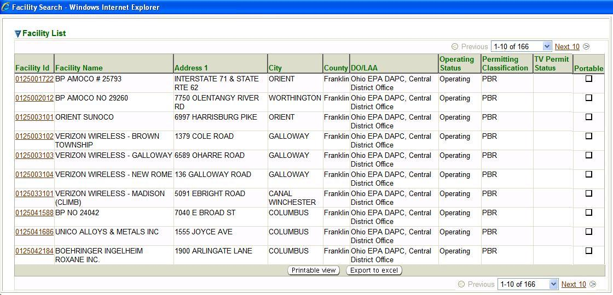

Previous Topic
Next Topic
| Facilities |
Previous Topic |
Next Topic |
Facilities Search is the initial page you see when you select the Facilities tab. However, you may also get to the Facilities Search page in the second-level menu from any page within the Facilities tab no matter how you reached that page.
This is a standard search page, as described in Common Search Paradigm. The Search Criteria and Result List for this search are described below.
This topic contains the following sections:
By default, the search criteria are specified to select all facilities that are Operating, with no other qualifications selected. You may of course, add to or modify these values before you submit your search. The more criteria you are able to specify, the more precise your search will be. Broad searches can retrieve many records that can make it difficult to hone in on the information you're really looking for. If, for example, you submit a search with only the default criteria set, you will get a record for each Operating facility of any type in the entire State of Ohio which has a relationship with the Ohio EPA Division of Air Pollution Control. There are approximately 13,493 such facilities! So, you should try to narrow your search by specifying as many criteria as you can to identify the facility or facilities you are really looking for.
After you complete the criteria for the search you want, and click on
 ,
the system searches all of the records for all the facilities stored in its
database, selects
the ones that meet ALL of the criteria you have specified, and returns
summary information
about those facilities in a datagrid. The datagrid below is the result of a search submitted
with search criteria specified to select all facilities that are
Operating with Facility Class
of PBR,
if they are serviced by
the Central District Office and are located in Franklin
county.
,
the system searches all of the records for all the facilities stored in its
database, selects
the ones that meet ALL of the criteria you have specified, and returns
summary information
about those facilities in a datagrid. The datagrid below is the result of a search submitted
with search criteria specified to select all facilities that are
Operating with Facility Class
of PBR,
if they are serviced by
the Central District Office and are located in Franklin
county.

Facilities Search Results Datagrid
The summary data returned includes columns providing Facility ID, Facility Name, Address information for the facility, including the County in which it is physically located, the DO/LAA that services the facility, its Operating Status, Facility Class, TV Permit Status (if applicable), and the Portable flag (if applicable) for all the Facilities that match your search criteria. Note that the data in the Facility ID column in the datagrid is a hyperlink. If you click on any such link in the datagrid, the system will take you to the initial Facility Detail screen for the facility that the link you selected references.
This datagrid supports all the common functionality for datagrids as described in
Common User Interface Elements - Datagrids
Back to Top
Copyright © 1996, 2004, Oracle. All rights reserved.